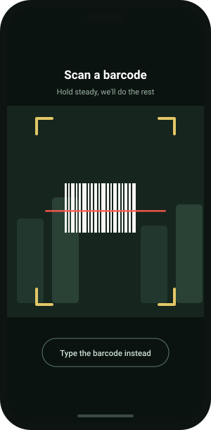
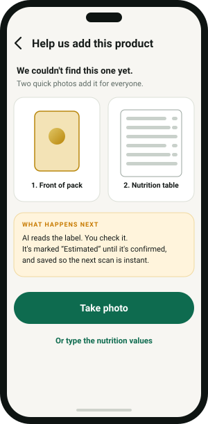
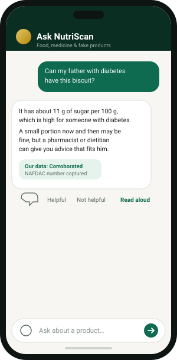
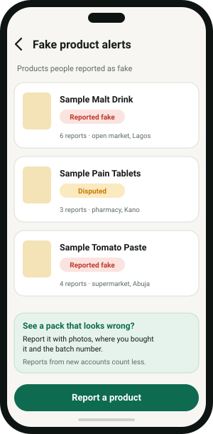

From barcode to decision, one step at a time
Here is exactly what happens when you use NutriScan, and why you can rely on each step. Screens below use sample products.
Scan the barcode
Open the scanner and point your camera at the barcode. It reads the code and looks the product up in the NutriScan data set. If the camera struggles, type the number instead.
- Works with the barcodes on packaged food and medicines.
- Recent scans are kept on your phone, so you can look again without data.
- You can also search the database by name, brand or NAFDAC number, without scanning.

Get a score you can understand
Every food gets a score from 1 to 10 and a label: Good, Moderate or Avoid. The score comes from fixed rules based on WHO guidance, measured per 100 g, so two products can be compared fairly.
- Reasons, not just a number. You see which nutrient pulled the score down.
- One high nutrient caps the label. A product with very high sugar cannot look “Good”.
- Drinks are judged as drinks. Their sugar limits are stricter, because we drink more than we eat.
- Medicines are not scored for nutrition. That would be meaningless, so we say so.

See what it means for you
If you choose to tell the app about diabetes, high blood pressure, a weight goal or allergies, the result gets a short “For you” note. A snack that is fine for one person can be a poor choice for another.
- Diabetes: sugar and carbohydrates are read with sugar-free claims and sweeteners handled carefully.
- Blood pressure: sodium is checked against your condition, and if it is not on file we say we cannot tell.
- Allergies: ingredients are checked against what you listed. We only ever warn you. We never say a product is “safe for your allergy”, because an ingredient list can be incomplete.
All of this is optional, and you can change or clear it in your profile at any time.
Same product, different advice
No health conditions: “Moderate. Fine now and then.”
Managing diabetes: “High sugar for you. Watch the portion, or choose a lower-sugar option.”
Allergic to milk: “Contains milk. Not suitable for you.”
New product? Teach NutriScan
Nigeria has thousands of products that global databases have never seen. When you scan one we do not know, you take two photos: the front of the pack and the nutrition table. AI reads the label, you check it, and the product is saved for everyone.
- Until it is confirmed, the product is marked Estimated.
- If a value could not be read, we say so and let you type it in. We never score on missing data.
- Your photo is used to read the label and is not kept. The product facts are saved, not you.

Check how far the data can be trusted
Every product carries a trust level that is worked out from stored evidence, never just asserted. You see the level, the reasons, any disagreement between sources, and links to the sources.
- Verified: the NAFDAC number was confirmed.
- Corroborated: two independent sources agree.
- Sourced: one source we can point to.
- Unverified: we do not have enough proof yet, and we say so.

Ask NutriScan anything about food or medicine
Open the chat and ask in plain language. You can attach up to three photos: a pack, a nutrition table, a medicine box. It uses what NutriScan already knows about the product, and your profile if you share it.
- Read aloud. Tap to hear any answer, using your phone’s built-in voice.
- Safe by design. It does not diagnose, and it does not give personal doses. It points you to a pharmacist.
- Emergency words such as an overdose or chest pain show a fixed “call 112” notice straight away.
- You are in control. Delete one chat or all of them whenever you like.

Spot fakes together
If a pack looks wrong, report it with photos, where you bought it and the batch number. Reports build a list of products people have flagged, with the places they were bought.
- Hard to game. Reports from brand-new accounts count for less, and photos and batch numbers add weight.
- Fair to makers. Manufacturers can dispute a report, and a person on our team reviews it.
- No social feed. It is a safety list, not a place for arguments.

Try it on something in your kitchen
The beta is free. Read the short notes on the download page, then install.
Go to download